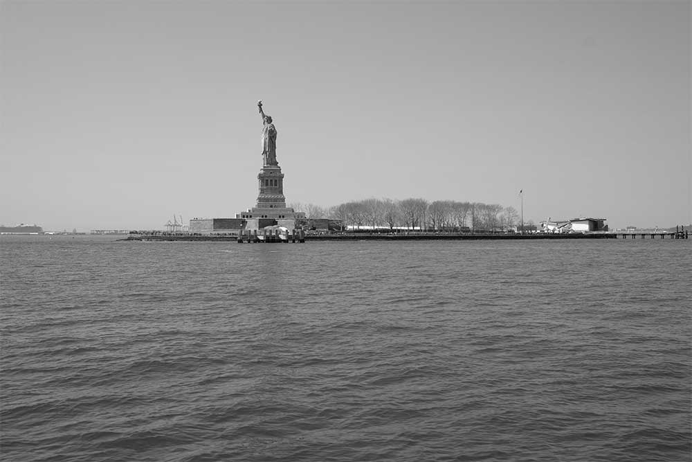
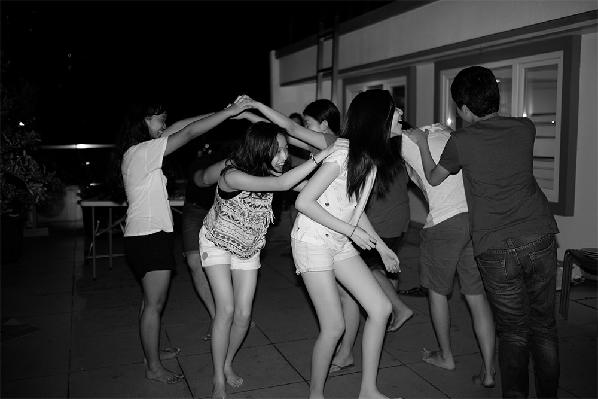
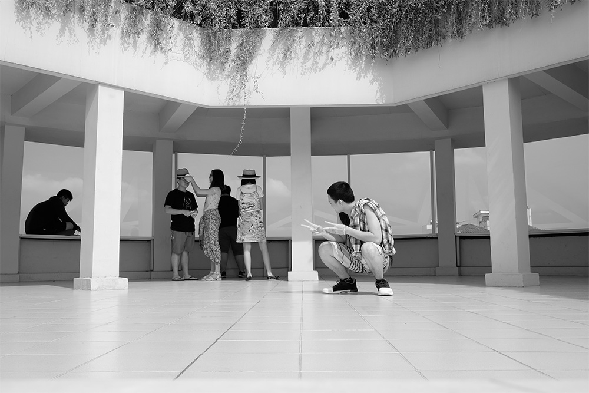

I remember the only time I ever saw my mother cry. I was eating apricot pie.
I remember how much I cried seeing "South Pacific" (the movie) three times.
I remember how good a glass of water can taste after a dish of ice cream.
I remember when I got a five-year pin for not missing a single morning of Sunday School for five years. (Methodist)
I remember when I went to a "come as your favorite person" party as Marilyn Monroe.
I remember one of the first things I remember . An icebox. (As opposed to a refrigerator)
I remember white margarine in a plastic bag. And a little package of orange powder. You put the orange powder in the bag with the margarine and you squeezed it all around until the margarine became yellow.
I remember how much I used to stutter.
I remember how much, in high school, I wanted to be handsome and popular.
I remember when, in high school, if you wore green and yellow on Thursday it meant that you were queer.
I remember when, in high school, I used to stuff a sock in my underwear.
I remember when I decided to be a minister. I don't remember well when I decided not to be.
I remember the first time I saw television. Lucille Hall was taking ballet lessons.
I remember the day John Kennedy was shot.
I remember that for my (fifth birthday all I wanted was an off-one-shoulder black satin evening gown. I got it. And I wore it to my birthday party.
I remember a dream said that my Mondrian period paitings were even better than Mondrian.
I remember a dream I have had often of being able to fly. (Without an airplane)
I remember many dreams of finding gold and jewels.
I remember a little boy I used to take care of after school while his mother worked.
I remember how much fun it was to punish him for being bad.
I remember a dream I used to have a lot of a beautiful red and yellow and black snake in bright green grass.
I remember St. Louis when I was very young.
I remember the tattoo shop next to the bus station and the two big lions in front of the Museum of Art.
I remember round cards.
I remember squaw dresses.
I remember big fat ties with fish on them.
I remember the first ball point pens. They skipped, and deposited little balls of ink that would accumulate on the point.
I remember rainbow pads.
I remember Aunt Cicora who lived in Hollywood. Every year for Christmas she sent my brother and me a joint present of one book.
I remember the day Frank O'Hara died. I tried to do a painting somehow especially for him. (Especially good) And it turned out awful.
I remember canasta.
I remember “How Much Is That Doggie In The Window?"
I remember butter and sugar sandwiches.
I remember Pat Boone and "Love Letters In The Sand.”
I remember Teresa Brewer and "I Don't Want No Ricochet Romance."
I remember "The Tennessee Waltz."
I remember "Sixteen Tons.”
I remember "The Thing.”
I remember "The Hit Parade."
I remember Dorothy Collins.
I remember Dorothy Collin's teeth.
I remember when I worked in an antique-junk shop and I sold everything cheaper than I was supposed to.
I remember when l lived in Boston reading all of Dostoevsky’s novels one right after the other.
I remember (Boston) pan handling on the street where all the art galleries were.
I remember collecting cigarette butts from the urns in front of The Museum of Fine Arts in Boston.
l remember planning to tear page 48 out of every book I read from the Boston Public Library, but soon losing interest.
I remember Bickford's.
I remember the day Marilyn Monroe died.
I remember the first time I met Frank O'Hara. It was a cool early Spring evening but he was wearing only a white shirt with the sleeves rolled up to his elbows. I remember that he seemed very sissy to me. Very theatrical. Decadent. I remember that I liked him instantly.